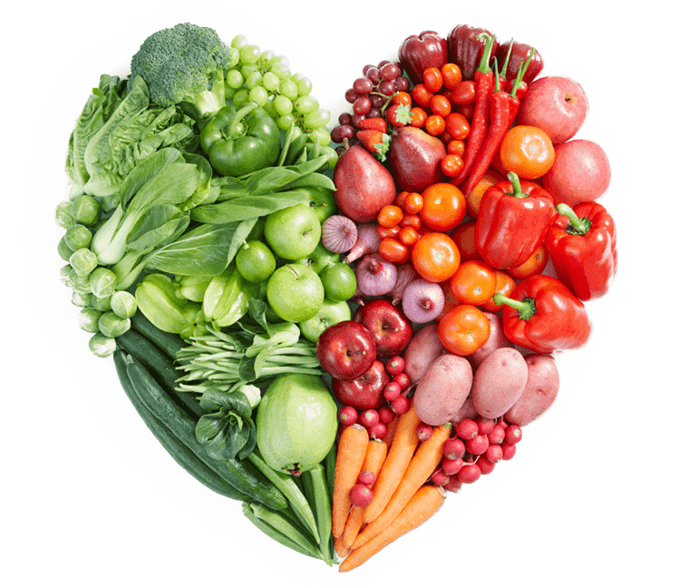
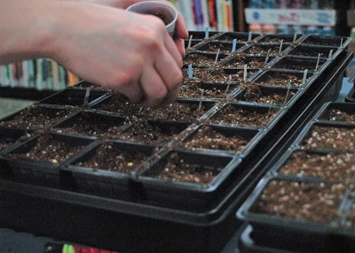
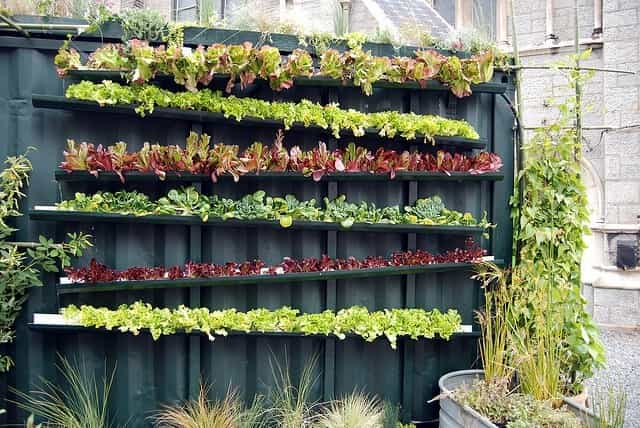

is an aspiring philosopher king, living the dream, travelling the world, hoarding FRNs and ignoring Americunts. He is a European at heart, lover of Latinas, and currently residing in the USA.


Spring is just around the corner, and I urge every man to consider planting a garden. First, there is the obvious food source. A garden is a frugal investment, which can provide months of crops. The quality of food will be higher than anything you can buy in a store, and it can be produced pesticide-free. Second, gardening develops an important survival skill that is fun and rewarding. Third, you are making an important step towards self sufficiency, and lastly, you stop contributing to agribusiness profits.
Have you looked at the cost of organic produce lately? I’ve found that many times you can buy a small plant for the price of the fruit or leaves that are already on it. For example, herb plants such as basil, parsley, sage, etc. cost $3 at my local grocery store, whereas the cuttings of herbs in the produce section cost roughly the same. You could literally just buy the plant, use its leaves for their superior freshness as compared to the dying clippings, and toss the rest of the plant in the garbage when you are done and come out the same as buying the herb cuttings only.
If you plant, feed, and water the plant, you will have a year’s worth of fresh herbs. Likewise, last year a bell pepper seedling from WalMart cost less than two bell peppers. If you only get two peppers off the plant, you will break even, and of course your product will be fresher and natural.
She’s focused on the farmer
Agriculture was the first step of human civilization. Prior to developing agriculture, or literally, “tillage of the soil,” humans were hunter gatherers, dependent on finding food every day in order to survive. Just imagine how different life would be if we had to spend hours every day just to find food.
At the beginning of the 20th century, about a third of Americans worked in agriculture. Farming touched all families and was a way of life. And why shouldn’t it be? Eating well provides a foundation for developing a strong body and mind. Today around 4% of the workforce is involved in agriculture, due to factory farms, corporate farming techniques, and automation. By growing your own food, you are participating in one of the fundamental activities that fuel human civilization, and you will feel a connection to your food and your body.

If you are eating something from your garden, I can guarantee it is healthier than whatever your alternative meal was. Eating a diet rich in fresh fruits and vegetables will give you more energy, and studies show that a meal from unprocessed whole foods is highly beneficial. Further, many of our diets are poor in minerals, and this can be traced back to poor nutrients in soils in commercial farms. Minerals are absorbed by plants through the roots, and natural food consumption is the best way to increase your intake of vitamins and minerals.
My advice is to start out with something you already enjoy eating, or know you will eat. Tomatoes are a common choice, and tomato plants are among the cheapest and easiest to grow. It’s also surprisingly easy to grow lettuce, kale, arugula, cabbage, broccoli, okra, radishes, turnips, and carrots in a relatively small area.
If you have a little more space, try potatoes, onions, cucumbers, watermelons, or blueberries. I’ve found myself eating things I’ve never even bought or tried before. For example, I don’t think I’ve ever purchased a turnip, but I’ve made a delicious and easy turnip meal just by boiling them with butter, salt, and pepper, and eating a large root vegetable like turnips is an excellent source of minerals. Your local home supply store, hardware store, or even Wal Mart will have a good supply of seedlings that are popular for your area.

If you have an area of at least 10 square feet of ground with good direct sun, you can purchase small seed trays for planting seeds rather cheaply. I found a 6×6 starting tray at the dollar store for $4, and it’s prepackaged with soil. Just buy seeds (often less than a dollar a package, more for heirloom or organic), plant inside in a warm place, and wait.
To germinate, seeds need only heat and moisture. Germination can take from a couple of days to a couple of weeks. After you see the seedlings poke through the earth, place them in sunlight until they are a few inches high, and transfer to your garden. If this is your first time, don’t worry too much about what varieties or what type of trays you are buying—just do it. It will be a learning experience and you can move on to a more complicated garden next year.

I recently stumbled across some excellent how-to videos from GrowingYourGreens. I came across his most popular video, which is how to grow 53 plants in 4 square feet with a vertical container garden. If you have limited space, check out the video for advice and info on how to turn even the tiniest of space into a gardening area. I have bookmarked the page, as it turns out they are the most popular gardening videos on Youtube. Whatever topic you’re interested in, from composting to hydroponics to seed selection, this hippie has it covered.
Part of neomasculinity is becoming self sufficient in all facets and developing important skills and valuable resources. Take the challenge and grow something this year. Some of my personal favorites are bell peppers, broccoli, tomatoes, basil, sage, mint, and the best strawberry I’ve ever tasted came out of my garden last year. Feel free to share your experiences in the comments.
Read More: 10 Reasons You Should Become A Survivalist